Unit 1: Biochemistry
Activity 1: Chemistry of Life
Content
Now let’s put together everything you have learned so far and study biological molecules. These molecules are often termed macromolecules and make up most of the structural and functional components of living things.
Carbohydrates
You consume carbohydrates everyday, usually in large amounts to provide your body with energy.
Monosaccharides The simplest carbohydrates are called monosaccharides or simple sugars. The following is the structure of glucose. Glucose can exist in a linear chain as shown or a ring structure shown beside. Glucose is carried in the blood and transported to the cells to make cellular energy |
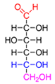 | 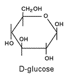 |
There are various monosaccharides such as galactose, xylose, fructose, and more. They have a similar cyclic structure, but a different arrangement of atoms. Glucose and galactose have a six carbon ring structure. There are five carbon structures such as the monosaccharides ribose and deoxyribose that make up the DNA structure. |
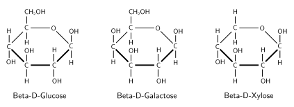 Various Monosaccharides |
Disaccharides Two monosaccharides can be attached through a dehydration/hydrolysis reaction to form a disaccharide. Sucrose (table sugar) is an example of a disaccharide. It is made from the monosaccharides glucose and fructose joined through a hydrolysis reaction. These types of linkages are called glycoside linkages. |
Polysaccharides These carbohydrates are polymers made up of many monosaccharides joined together. Polysaccharides are made of thousands of sugars in linear or branched structures. They are very large molecules and include such molecules as cellulose (wood) and starch which is found in rice and pasta. |
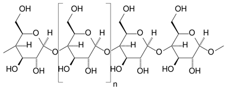 |
Proteins Primary Structure As mentioned earlier, proteins are made of amino acids linked by covalent bonds called peptide bonds. Most proteins are hundreds of amino acids long. The sequence of amino acids in the chain is specific for each protein. The long sequence is called the protein’s primary structure.
|
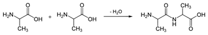2O." width="350" height="60"> Amino Acids connected in a peptide bond |
| 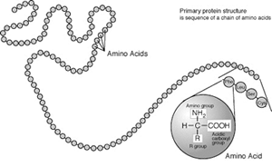 A protein primary structure |
Secondary, Tertiary and Quaternary Structure The primary sequence of a protein can be folded on itself forming two visible secondary structures called an alpha helix or a beta pleated sheet. These structures are held together by hydrogen bonds. The next level of complexity is the tertiary structure. This is a 3-dimensional globular structure held together by interactions between amino acids, hydrogen bonds, and disulphide linkages. Some proteins are made of more than one amino acid chain or primary structure. When the different chains come together, they form a quaternary structure also held together by interactions between amino acids, hydrogen bonds, and disulphide linkages. A functional protein depends on its 3-dimensional structure. If the structure is damaged or altered, this may affect the function of the protein. |
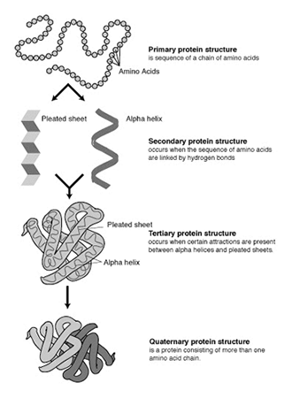 The different levels of protein organization |
Fats
Fats are molecules that do not like water. Molecules that do not mix with water are said to be hydrophobic. There are various types of fats such as triglycerides, phospholipids and steroids.
Triglycerides These are fats that are made of glycerol and three molecules of fatty acid. Fatty acids are long hydrocarbon chains with a carboxyl group on the end to make an acid. Fatty acids can vary in length and saturation (meaning the number of C-C double bonds). Each hydroxyl group of the glycerol can connect to a fatty acid through an esterification reaction. This is seen below. |
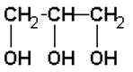 Glycerol |
A Triglyceride – Glycerol & 3 Fatty Acids |
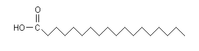 Fatty Acid – Stearic Acid. Each line represents a carbon attached to two hydrogens. |
Steroids Steroids are fats that are based on the structure of cholesterol. Cholesterol is important in the structure of cell membranes and in the synthesis of many hormones in the body such as testosterone, estrogen, aldosterone, and more. When cholesterol levels are high in the blood, this can lead to arthrosclerosis. Phospholipids Phospholipids are the last type of fat you will study. They are very important in the structure of cell membranes. Phospholipids are similar in structure to triglycerides, but one fatty acid is replaced by a highly polar phosphate group. This makes this end of the fat attracted to water or water-loving which is referred to as hydrophilic. |
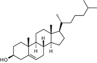 Cholesterol |
| 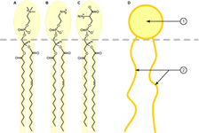 A phospholipid in a cell membrane. 1) Is a hydrophilic phosphate head. 2) Illustrates the hydrophobic fatty acid tails. |
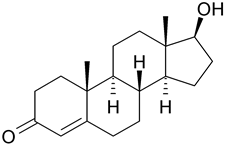 Testosterone |
 |
Learn more about carbohydrates, proteins and fats. Carbohydrates |
|---|
 Portfolio:
Portfolio:
Notes help prepare you for tests. Keep all of your notes in your portfolio. Be prepared to submit your portfolio notes and organizers to your teacher for assessment at various times during the course
Use your portfolio to research more on macromolecules: monosaccharides, disaccharides, oligosaccharides, glycosidic linkages, cellulose, amylose, amylopectin, glycogen, amino acids, primary, secondary, tertiary and quaternary protein structure, N-terminal, C- Terminal, fatty acids – saturated and unsaturated, triglycerols, ester linkages, micelles, phospholipids, and phospholipid bilayer.
This is a disclaimer. External Resources will open in a new window. Not responsible for external content.
Unless otherwise indicated, all images in this Activity are from the public domain or are © clipart.com or Microsoft clipart and are used with permission.